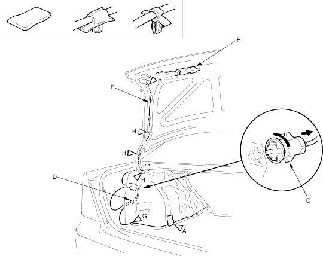

Trunk Lid Opener/Fuel Fill Door Opener Cable Replacement (cont'd)
20-47
Remove the cushion tape (A) and detach the clip (B) with a clip remover. Remove the fuel fill door latch (C) by turning it 90° and detach the opener cable junction box (D) from the body.
Fastener Locations
A : Cushion tape, 1B and G : Clip, 2H : Clip, 3

Disconnect the trunk lid opener cable (E) from the trunk lid latch (F), refer to the '01 CIVIC Shop Manual, P/N 62S5A00 on this CD (see page 20-130).
Using a clip remover, detach the clip (G) from the body and detach the clips (H) from the trunk lid hinge.
Remove the trunk lid opener/fuel fill door opener cable from the vehicle. Take care not to bend the cable.
Install the opener cable in the reverse order of removal and note these items:
Align the mark on the cable with the clip on the bottom portion of the trunk lid hinge.
 : Cushion tape, 1B and G
: Cushion tape, 1B and G